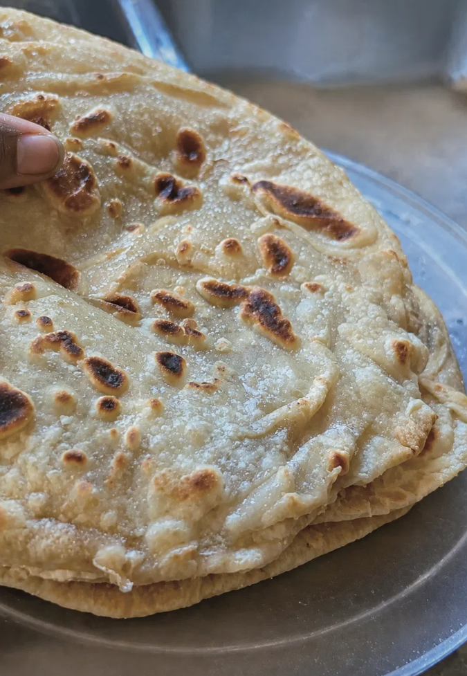

Recipe & Narrative · Road to Kisumu Series
This one took a long time to get right. I remember in the beginning I'd get frustrated, I remember throwing out whole batches of dough. I remember the sticky batch that was impossible to work with and I remember almost giving up. There were a few reasons for my failures, and I failed to the point that they began to become good failures — I was beginning to come away from the process with a result that was edible, usable, but it wasn't a flaky, layered, East African Chapati, or Chapo as the Gen Z call them.
Chapatis, like Ugali, are a Kenyan staple, but also found in other East African countries — but its origins are in South Asia, particularly North India and Pakistan, and known in a few other areas around there as well. It's another one of those foods that traveled across the Indian Ocean along with colonialism. It's a common story for the continent of Africa: nothing is ever given without something being taken.
And here's the part that gets me every time. The reason chapati is sitting on a Kenyan plate at all traces back to a railway — the Uganda Railway the British pushed inland from Mombasa at the turn of the century, the one that ended its run right at the shores of Lake Victoria, in Kisumu. To build it they shipped over tens of thousands of indentured laborers from British India, men from Punjab and Gujarat, and a lot of them never left. They stayed, they married, they cooked, and the food they cooked stayed too. So when I say chapati traveled across the Indian Ocean, I mean it rode a steam engine all the way to the very city I'm about to call home. The dough beat me for weeks — and it had been making that same trip to Kisumu for over a hundred years before I ever showed up.
But this is not a history lesson in globalization, we talking about those sweet chapati, and as the saying goes "Mbele uanze kusema ati love is sweet, make sure unakula chapati tatu kila asubuhi na kaa kwa hiyo mdomo yako yenye inaongea ujinga ati love is sweet. Chapati is sweet bwana. Hakuna kitu inashinda chapat. Chapat! Hakuna kitu inashinda utamu wa chapat." Which translates to, "Before you start saying that love is sweet, make sure you eat three chapatis every morning and shut that mouth of yours that is talking nonsense about love being sweet. Chapati is sweet, man. Nothing beats chapati. Chapati! Nothing beats the deliciousness of chapati."
And the name itself? Chapat. It comes from the Hindi — to slap, to flatten, the sound of dough getting smacked between two palms. So when that saying barks Chapat! Hakuna kitu inashinda chapat! it isn't just shouting the name, it's the sound of the thing being made. The slap is in the word.
Yes, that's how serious this food is, and why if you are going to say you can make Chapatis you damn sure better get it right.
Now East Africa has their own opinions on which country makes them better, a friendly competition with Tanzania, Uganda, and Kenya leading the race. It is a very popular street food, and affordable. It is eaten in many different ways, often accompanying stews, beans, fried meat, choma, served with boiled eggs and smokies, served beside a nice cup of Chai, or served wrapped around an omelet in Uganda and sold as a popular street food that they call a Rolex. There are endless ways to enjoy them.
I remember the day I finally got it right, I made a second batch just to make sure it wasn't luck. I remember balling up those soft chapatis and letting them bounce back to their original shape, peeling the layers, and enjoying that buttery sweetness. I filmed a recipe video and since then I've improved leaps and bounds. The problem I was having was I was rushing the process, I was treating the dough like bread and not giving it the proper kneading. It's like most things in Kenya — "Why are you rushing, man?"
So don't rush. Here's how I make them now.
In your 1.5 cups of warm water, dissolve the sugar and salt. Set it aside.
In a big bowl, rub the 3 tablespoons of oil into the flour until it's evenly worked through. Pour in the warm water mixture and bring it together to a shaggy, crumb consistency — then knead. This is the part I kept rushing. Knead until it's genuinely soft and smooth, then cover it and let it rest a full hour. Don't cheat the rest.
Turn the rested dough out onto a large floured surface and roll it wide and thin. Brush the whole top surface with oil and dust it with flour — this is where the layers are born.
Run a pizza cutter through the dough to cut it into long strips. Fold each strip over onto itself, then coil it into a tight little disc. Rest the discs about 10 minutes.
Heat a pan over medium-high. Roll each disc out into a flat circle. Cook 2 minutes on the first side, flip, then brush the top with butter or oil. After another 2 minutes flip again and butter the other side. Give it a final 30-second flip and cook both sides until golden brown and freckled. Repeat until they're all done.
Pull the last one off the pan. Ball one up in your fist and watch it bounce back to shape. Peel the layers apart. Taste that buttery sweetness.
That's the whole secret, and it's almost insulting how simple it is: slow down. Give the dough the time and the hands it's asking for. Knead it like you mean it, rest it like it's earned it, and stop treating it like a loaf of bread in a hurry. Everything I needed was in that one Kisumu question I kept hearing — "why are you rushing, bro?" The chapati already knew. I was the one who had to catch up.
And when you finally get it, you'll understand why a grown man would tell you to eat three every morning before you open your mouth about love. Because love is complicated. Chapat is just sweet.
— Chef Dumela